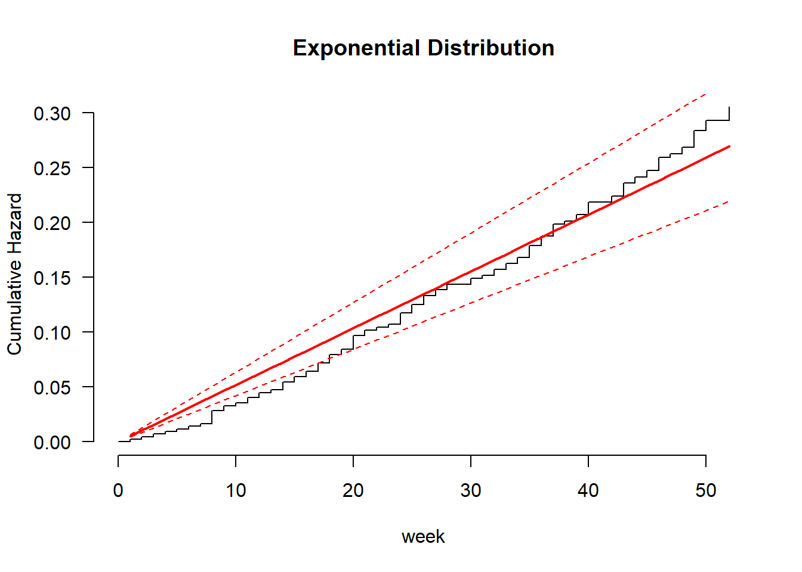
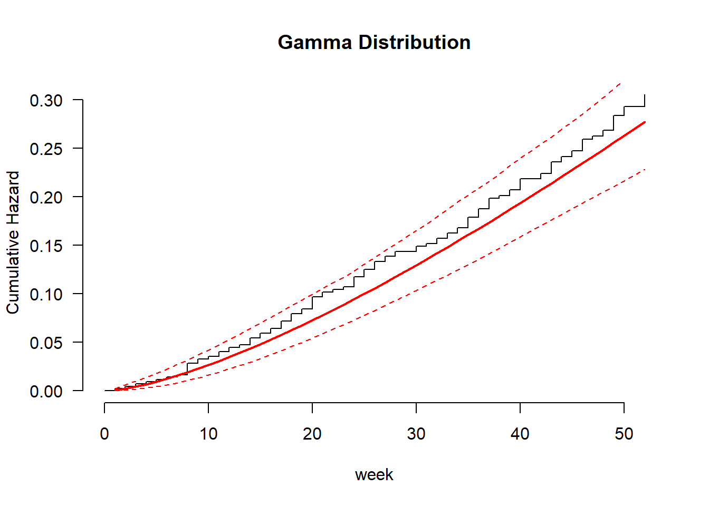
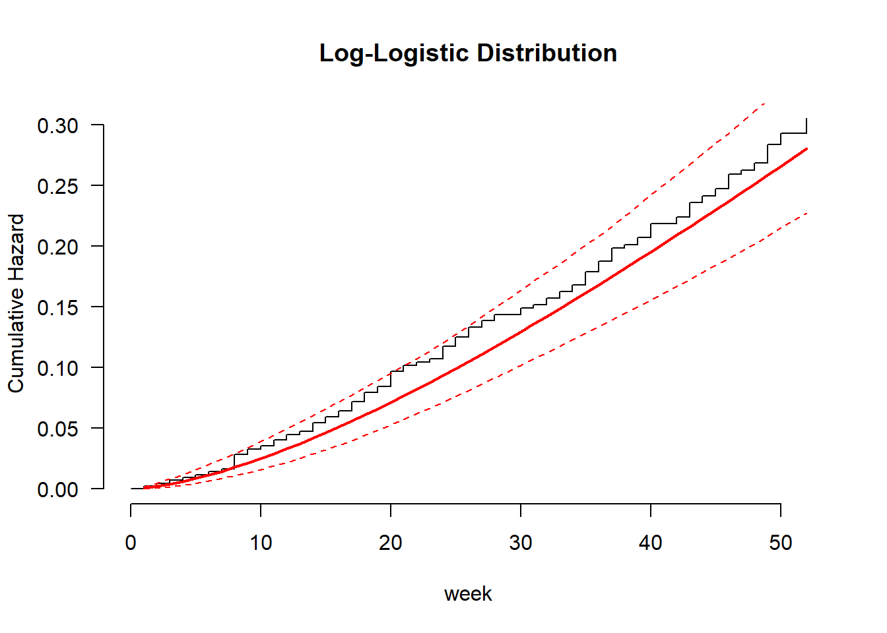

Chapter 2 Survival Analysis
Welcome to the Survival Analysis module! This document will be periodically udated throughout the course. As always, first things we need to do is get all of the packages needed for the course:
library(survival)
library(foreign)
library(ggplot2)
library(survminer)
library(rms)
library(flexsurv)
library(dplyr)
library(ciTools)
library(here)
library(visreg)
library(cmprsk)Also need to get data sets that will be used throughout this course:
loyalty=read.csv("Q:\\My Drive\\Fall 3 2016 Survival Analysis\\Data\\Data_R\\loyalty.csv",header=T)
recid=read.csv("Q:\\My Drive\\Fall 3 2016 Survival Analysis\\Data\\Data_R\\recid.csv",header=T)
recid_long=read.csv("Q:\\My Drive\\Fall 3 2016 Survival Analysis\\Data\\Data_R\\recid_long.csv",header=T)
recid_lag=read.csv("Q:\\My Drive\\Fall 3 2016 Survival Analysis\\Data\\Data_R\\recid_lag.csv",header=T)
leaders = read.csv(file = "Q:\\My Drive\\Fall 3 2016 Survival Analysis\\Data\\Data_R\\leaders.csv", header = TRUE)
bladder = read.csv(file = "Q:\\My Drive\\Fall 3 2016 Survival Analysis\\Data\\Data_R\\bladder.csv", header = TRUE)
simple=data.frame(matrix(c(7,8,10,3,2,3,1,1,0,1,1,0),ncol=2))
colnames(simple)=c("tenure","censored")To perform a survival analysis, you need to identify which variable has the “time” information and which variable contains the “censoring” information. This is done through the Surv function.
# Create a Survival Analysis Object
simple.s=Surv(time=simple$tenure,event=simple$censored)
# Create a Kaplan-Meier Survival Curve with Censoring
simple_km=survfit(Surv(time = tenure, event = censored)~1, data = simple)
summary(simple_km)## Call: survfit(formula = Surv(time = tenure, event = censored) ~ 1,
## data = simple)
##
## time n.risk n.event survival std.err lower 95% CI upper 95% CI
## 2 6 1 0.833 0.152 0.5827 1
## 3 5 1 0.667 0.192 0.3786 1
## 7 3 1 0.444 0.222 0.1668 1
## 8 2 1 0.222 0.192 0.0407 1plot(simple_km, main = "Survival Function", xlab = "Tenure", ylab = "Survival Probability")
loyalty.fit=survfit(Surv(Tenure, censored)~1,data=loyalty)
summary(loyalty.fit)## Call: survfit(formula = Surv(Tenure, censored) ~ 1, data = loyalty)
##
## time n.risk n.event survival std.err lower 95% CI upper 95% CI
## 1 250 2 0.9920 0.00563 0.98102 1.000
## 2 245 5 0.9718 0.01052 0.95135 0.993
## 3 235 8 0.9387 0.01535 0.90907 0.969
## 4 220 5 0.9173 0.01772 0.88327 0.953
## 5 207 4 0.8996 0.01946 0.86226 0.939
## 6 197 2 0.8905 0.02031 0.85155 0.931
## 7 189 1 0.8858 0.02074 0.84603 0.927
## 8 177 6 0.8557 0.02338 0.81112 0.903
## 9 169 4 0.8355 0.02493 0.78804 0.886
## 10 160 1 0.8303 0.02531 0.78211 0.881
## 11 156 4 0.8090 0.02681 0.75811 0.863
## 12 144 2 0.7977 0.02759 0.74547 0.854
## 13 137 5 0.7686 0.02949 0.71294 0.829
## 14 128 2 0.7566 0.03023 0.69963 0.818
## 15 120 6 0.7188 0.03242 0.65796 0.785
## 16 107 3 0.6986 0.03354 0.63590 0.768
## 17 103 1 0.6919 0.03389 0.62851 0.762
## 18 96 1 0.6846 0.03430 0.62062 0.755
## 19 94 2 0.6701 0.03508 0.60473 0.742
## 20 89 2 0.6550 0.03587 0.58836 0.729
## 21 86 1 0.6474 0.03625 0.58011 0.723
## 22 82 2 0.6316 0.03705 0.56302 0.709
## 23 76 1 0.6233 0.03748 0.55400 0.701
## 24 73 1 0.6148 0.03793 0.54474 0.694
## 25 71 3 0.5888 0.03918 0.51680 0.671
## 27 63 1 0.5794 0.03966 0.50671 0.663
## 28 59 2 0.5598 0.04067 0.48550 0.645
## 29 57 2 0.5402 0.04155 0.46457 0.628
## 30 54 1 0.5302 0.04197 0.45397 0.619
## 31 52 2 0.5098 0.04276 0.43249 0.601
## 32 50 3 0.4792 0.04369 0.40077 0.573
## 35 44 3 0.4465 0.04459 0.36713 0.543
## 36 40 3 0.4130 0.04525 0.33321 0.512
## 42 31 1 0.3997 0.04571 0.31944 0.500
## 43 29 1 0.3859 0.04616 0.30526 0.488
## 44 27 1 0.3716 0.04661 0.29062 0.475
## 48 24 1 0.3561 0.04717 0.27471 0.462
## 51 18 1 0.3364 0.04852 0.25351 0.446
## 53 17 1 0.3166 0.04954 0.23295 0.430
## 60 12 1 0.2902 0.05196 0.20429 0.412
## 64 11 1 0.2638 0.05352 0.17726 0.393
## 78 8 1 0.2308 0.05607 0.14339 0.372
## 80 7 1 0.1979 0.05694 0.11256 0.348
## 83 6 1 0.1649 0.05619 0.08454 0.322
## 95 4 1 0.1237 0.05523 0.05153 0.297
## 105 3 1 0.0824 0.04988 0.02518 0.270
## 114 2 1 0.0412 0.03836 0.00665 0.255
## 129 1 1 0.0000 NaN NA NAplot(loyalty.fit)
recid.fit = survfit(Surv(week, arrest)~1,data=recid)
summary(recid.fit)## Call: survfit(formula = Surv(week, arrest) ~ 1, data = recid)
##
## time n.risk n.event survival std.err lower 95% CI upper 95% CI
## 1 432 1 0.998 0.00231 0.993 1.000
## 2 431 1 0.995 0.00327 0.989 1.000
## 3 430 1 0.993 0.00400 0.985 1.000
## 4 429 1 0.991 0.00461 0.982 1.000
## 5 428 1 0.988 0.00515 0.978 0.999
## 6 427 1 0.986 0.00563 0.975 0.997
## 7 426 1 0.984 0.00607 0.972 0.996
## 8 425 5 0.972 0.00791 0.957 0.988
## 9 420 2 0.968 0.00852 0.951 0.984
## 10 418 1 0.965 0.00881 0.948 0.983
## 11 417 2 0.961 0.00935 0.942 0.979
## 12 415 2 0.956 0.00987 0.937 0.976
## 13 413 1 0.954 0.01011 0.934 0.974
## 14 412 3 0.947 0.01080 0.926 0.968
## 15 409 2 0.942 0.01123 0.920 0.964
## 16 407 2 0.937 0.01165 0.915 0.961
## 17 405 3 0.931 0.01223 0.907 0.955
## 18 402 3 0.924 0.01278 0.899 0.949
## 19 399 2 0.919 0.01313 0.894 0.945
## 20 397 5 0.907 0.01395 0.880 0.935
## 21 392 2 0.903 0.01425 0.875 0.931
## 22 390 1 0.900 0.01440 0.873 0.929
## 23 389 1 0.898 0.01455 0.870 0.927
## 24 388 4 0.889 0.01512 0.860 0.919
## 25 384 3 0.882 0.01552 0.852 0.913
## 26 381 3 0.875 0.01591 0.844 0.907
## 27 378 2 0.870 0.01616 0.839 0.903
## 28 376 2 0.866 0.01640 0.834 0.898
## 30 374 2 0.861 0.01664 0.829 0.894
## 31 372 1 0.859 0.01675 0.827 0.892
## 32 371 2 0.854 0.01698 0.822 0.888
## 33 369 2 0.850 0.01720 0.816 0.884
## 34 367 2 0.845 0.01742 0.811 0.880
## 35 365 4 0.836 0.01783 0.801 0.871
## 36 361 3 0.829 0.01813 0.794 0.865
## 37 358 4 0.819 0.01851 0.784 0.857
## 38 354 1 0.817 0.01860 0.781 0.854
## 39 353 2 0.812 0.01878 0.777 0.850
## 40 351 4 0.803 0.01913 0.767 0.842
## 42 347 2 0.799 0.01929 0.762 0.837
## 43 345 4 0.789 0.01962 0.752 0.829
## 44 341 2 0.785 0.01977 0.747 0.824
## 45 339 2 0.780 0.01993 0.742 0.820
## 46 337 4 0.771 0.02022 0.732 0.812
## 47 333 1 0.769 0.02029 0.730 0.809
## 48 332 2 0.764 0.02043 0.725 0.805
## 49 330 5 0.752 0.02077 0.713 0.794
## 50 325 3 0.745 0.02096 0.705 0.788
## 52 322 4 0.736 0.02121 0.696 0.779ggsurvplot(recid.fit, data = recid, conf.int = T, palette = "purple", xlab = "Week", ylab = "Survival Probability", legend = "none", break.y.by = 0.1)

2.1 Stratified Analysis
We can look at Survival curves segmented into different groups or strata. You need to define the variable that creates the strata in order to create this analysis.
Loyal.KP2 = survfit(Surv(Tenure, censored) ~ Loyalty,data=loyalty)
ggsurvplot(Loyal.KP2,data=loyalty,palette = c("blue","orange"),conf.int = T)
Recid.KP = survfit(Surv(week, arrest) ~ wexp,data=recid)
ggsurvplot(Recid.KP,data=recid,palette = c("blue","orange"),conf.int = T,legend.title = "work experience", legend.labs = c("no", "yes"))
# Test for Differences in Survival Curves #
survdiff(Surv(Tenure, censored) ~ Loyalty, data=loyalty, rho=0) ## Call:
## survdiff(formula = Surv(Tenure, censored) ~ Loyalty, data = loyalty,
## rho = 0)
##
## N Observed Expected (O-E)^2/E (O-E)^2/V
## Loyalty=0 183 67 65 0.0595 0.176
## Loyalty=1 67 39 41 0.0944 0.176
##
## Chisq= 0.2 on 1 degrees of freedom, p= 0.7# Log-Rank Test
survdiff(Surv(Tenure, censored) ~ Loyalty, data=loyalty, rho=1) ## Call:
## survdiff(formula = Surv(Tenure, censored) ~ Loyalty, data = loyalty,
## rho = 1)
##
## N Observed Expected (O-E)^2/E (O-E)^2/V
## Loyalty=0 183 49.6 49.3 0.00155 0.0063
## Loyalty=1 67 24.9 25.1 0.00303 0.0063
##
## Chisq= 0 on 1 degrees of freedom, p= 0.9# Wilcoxon Test
survdiff(Surv(week, arrest) ~ wexp, data=recid,rho=0) # Log-Rank Test ## Call:
## survdiff(formula = Surv(week, arrest) ~ wexp, data = recid, rho = 0)
##
## N Observed Expected (O-E)^2/E (O-E)^2/V
## wexp=0 185 62 45.6 5.91 9.91
## wexp=1 247 52 68.4 3.94 9.91
##
## Chisq= 9.9 on 1 degrees of freedom, p= 0.002survdiff(Surv(week, arrest) ~ wexp,data=recid,rho=1) # Wilcoxon Test ## Call:
## survdiff(formula = Surv(week, arrest) ~ wexp, data = recid, rho = 1)
##
## N Observed Expected (O-E)^2/E (O-E)^2/V
## wexp=0 185 55.0 39.9 5.75 11
## wexp=1 247 44.4 59.5 3.85 11
##
## Chisq= 11 on 1 degrees of freedom, p= 9e-042.2 Hazard function
We are able to calculate hazard probabilities and cumulative hazard functions in R.
# Calculating Hazard Probabilities
h= simple_km$n.event/simple_km$n.risk
index.h=rep(0,length=(max(simple$tenure)+1)) #Need to add 0
index.h[(simple_km$time)+1]=h #Because of 0
haz.plot=data.frame(cbind(seq(0,max(simple$tenure)), index.h))
colnames(haz.plot)=c("Time","Hazard")
ggplot(haz.plot,aes(x=Time,y=Hazard))+geom_line()
h = loyalty.fit$n.event/loyalty.fit$n.risk
index.h=rep(0,length=(max(loyalty$Tenure)+1)) #Need to add 0
index.h[(loyalty.fit$time)+1]=h #Because of 0
haz.plot=data.frame(cbind(seq(0,max(loyalty$Tenure)), index.h))
colnames(haz.plot)=c("Time","Hazard")
ggplot(haz.plot,aes(x=Time,y=Hazard))+geom_line()
h = recid.fit$n.event/recid.fit$n.risk
index.h=rep(0,length=(max(recid$week)+1)) #Need to add 0
index.h[(recid.fit$time)+1]=h #Because of 0
haz.plot=data.frame(cbind(seq(0,max(recid$week)), index.h))
colnames(haz.plot)=c("Time","Hazard")
ggplot(haz.plot,aes(x=Time,y=Hazard))+geom_line()
ggsurvplot(recid.fit, data = recid, fun = "cumhaz", conf.int = TRUE, palette = "purple", xlab = "Week", ylab = "Cumulative Hazard", legend = "none")
###Cumulative hazard function
h= simple_km$n.event/simple_km$n.risk
index.h=rep(0,length=(max(simple$tenure)+1)) #Need to add 0
index.h[(simple_km$time)+1]=h #Because of 0
cum.haz=cumsum(index.h)
haz.plot=data.frame(cbind(seq(0,max(simple$tenure)), cum.haz))
colnames(haz.plot)=c("Time","Hazard")
ggplot(haz.plot,aes(x=Time,y=Hazard))+geom_line()+labs(y="Cumulative Hazard")
ggsurvplot(
Recid.KP,
data = recid,
size = 1,
palette =
c("blue","orange"),
conf.int = TRUE,
pval = TRUE,
risk.table = TRUE,
risk.table.col = "wexp",
legend.labs =
c("No", "Yes"),
risk.table.height = 0.25,
ggtheme = theme_bw()
)
2.3 AFT
The following R codes illustrate how to fit the Accelerated Failure Time models.
# Accelerated Failure Time Model
recid.aft.ln <- survreg(Surv(week, arrest) ~ fin + age + mar + prio, data = recid, dist = 'lognormal')
summary(recid.aft.ln)##
## Call:
## survreg(formula = Surv(week, arrest) ~ fin + age + mar + prio,
## data = recid, dist = "lognormal")
## Value Std. Error z p
## (Intercept) 4.0146 0.3897 10.30 < 2e-16
## fin 0.3319 0.1657 2.00 0.04524
## age 0.0333 0.0153 2.18 0.02959
## mar 0.5609 0.2928 1.92 0.05541
## prio -0.0743 0.0264 -2.82 0.00481
## Log(scale) 0.2723 0.0765 3.56 0.00037
##
## Scale= 1.31
##
## Log Normal distribution
## Loglik(model)= -685.5 Loglik(intercept only)= -697.9
## Chisq= 24.85 on 4 degrees of freedom, p= 5.4e-05
## Number of Newton-Raphson Iterations: 4
## n= 432#Parameter interpretation
(exp(coef(recid.aft.ln))-1)*100## (Intercept) fin age mar prio
## 5439.988576 39.357426 3.386427 75.223685 -7.163067# Exponential vs. Weibull
recid.aft.w <- survreg(Surv(week, arrest) ~ fin + age + wexp + mar + paro + prio, data = recid, dist = 'weibull')
summary(recid.aft.w)##
## Call:
## survreg(formula = Surv(week, arrest) ~ fin + age + wexp + mar +
## paro + prio, data = recid, dist = "weibull")
## Value Std. Error z p
## (Intercept) 3.8086 0.3762 10.12 < 2e-16
## fin 0.2625 0.1376 1.91 0.05650
## age 0.0400 0.0159 2.51 0.01210
## wexp 0.1115 0.1516 0.74 0.46196
## mar 0.3389 0.2725 1.24 0.21366
## paro 0.0538 0.1394 0.39 0.69956
## prio -0.0646 0.0210 -3.08 0.00208
## Log(scale) -0.3383 0.0891 -3.80 0.00015
##
## Scale= 0.713
##
## Weibull distribution
## Loglik(model)= -680.5 Loglik(intercept only)= -696.6
## Chisq= 32.28 on 6 degrees of freedom, p= 1.4e-05
## Number of Newton-Raphson Iterations: 6
## n= 432# Checking Distributions
recid.aft.w <- flexsurvreg(Surv(week, arrest) ~ fin + age + wexp + mar + paro + prio, data = recid, dist = "weibull")
plot(recid.aft.w, type = "cumhaz", ci = TRUE, conf.int = FALSE, las = 1, bty = "n",
xlab = "week", ylab = "Cumulative Hazard", main = "Weibull Distribution")
recid.aft.e <- flexsurvreg(Surv(week, arrest) ~ fin + age + wexp + mar + paro + prio, data = recid, dist = "exp")
plot(recid.aft.e, type = "cumhaz", ci = TRUE, conf.int = FALSE, las = 1, bty = "n",
xlab = "week", ylab = "Cumulative Hazard", main = "Exponential Distribution")
recid.aft.g <- flexsurvreg(Surv(week, arrest) ~ fin + age + race + wexp + mar + paro + prio, data = recid, dist = "gamma")
plot(recid.aft.g, type = "cumhaz", ci = TRUE, conf.int = FALSE, las = 1, bty = "n",
xlab = "week", ylab = "Cumulative Hazard", main = "Gamma Distribution")
recid.aft.ll <- flexsurvreg(Surv(week, arrest) ~ fin + age + race + wexp + mar + paro + prio, data = recid, dist = "llogis")
plot(recid.aft.ll, type = "cumhaz", ci = TRUE, conf.int = FALSE, las = 1, bty = "n",
xlab = "week", ylab = "Cumulative Hazard", main = "Log-Logistic Distribution")
# Goodness-of-Fit Tests
like.e = flexsurvreg(Surv(week, arrest) ~ fin + age + wexp + mar + paro + prio, data = recid, dist = "exp")$loglik
like.w <- flexsurvreg(Surv(week, arrest) ~ fin + age + wexp + mar + paro + prio, data = recid, dist = "weibull")$loglik
like.ln <- flexsurvreg(Surv(week, arrest) ~ fin + age + wexp + mar + paro + prio, data = recid, dist = "lnorm")$loglik
like.g = flexsurvreg(Surv(week, arrest) ~ fin + age + wexp + mar + paro + prio, data = recid, dist = "gamma")$loglik
like.ll = flexsurvreg(Surv(week, arrest) ~ fin + age + wexp + mar + paro + prio, data = recid, dist = "llogis")$loglik
like.f = flexsurvreg(Surv(week, arrest) ~ fin + age + wexp + mar + paro + prio, data = recid, dist = "genf")$loglik## Warning in flexsurvreg(Surv(week, arrest) ~ fin + age + wexp + mar + paro + :
## Optimisation has probably not converged to the maximum likelihood - Hessian is
## not positive definite.pval.e.g = pchisq((-2*(like.e-like.g)), 2,lower.tail=F)
pval.w.g = pchisq((-2*(like.w-like.g)), 1,lower.tail=F)
pval.ln.g = pchisq((-2*(like.ln-like.g)), 1,lower.tail=F)
##pval.g.f = pchisq((-2*(like.g-like.f)), 1,lower.tail=F)
Tests = c('Exp vs. Gam', 'Wei vs. Gam', 'LogN vs. Gam')
P_values = c(pval.e.g, pval.w.g, pval.ln.g)
cbind(Tests, P_values)## Tests P_values
## [1,] "Exp vs. Gam" "0.00194259347065262"
## [2,] "Wei vs. Gam" "1"
## [3,] "LogN vs. Gam" "0.00767095999547646"# Predicted Survival Quantiles
recid.aft.w = survreg(Surv(week, arrest) ~ fin + age +prio, data = recid, dist = 'weibull')
summary(recid.aft.w)##
## Call:
## survreg(formula = Surv(week, arrest) ~ fin + age + prio, data = recid,
## dist = "weibull")
## Value Std. Error z p
## (Intercept) 3.7738 0.3581 10.54 < 2e-16
## fin 0.2495 0.1372 1.82 0.06901
## age 0.0478 0.0154 3.11 0.00189
## prio -0.0698 0.0201 -3.47 0.00051
## Log(scale) -0.3367 0.0892 -3.77 0.00016
##
## Scale= 0.714
##
## Weibull distribution
## Loglik(model)= -682 Loglik(intercept only)= -696.6
## Chisq= 29.17 on 3 degrees of freedom, p= 2.1e-06
## Number of Newton-Raphson Iterations: 6
## n= 432survprob.75.50.25 = predict(recid.aft.w, type = "quantile", se.fit = TRUE,p = c(0.25, 0.5, 0.75))
head(survprob.75.50.25$fit)## [,1] [,2] [,3]
## [1,] 52.68849 98.72758 161.95827
## [2,] 24.17956 45.30760 74.32514
## [3,] 17.89085 33.52383 54.99438
## [4,] 64.22717 120.34873 197.42682
## [5,] 35.95471 67.37185 110.52057
## [6,] 48.95457 91.73097 150.48064# Predicted Mean Event Time #
p.time.mean = predict(recid.aft.w, type = "response", se.fit = TRUE)
head(p.time.mean$fit, n = 10)## [1] 128.26394 58.86229 43.55317 156.35349 87.52751 119.17415 143.73152
## [8] 115.26040 81.92984 113.19494# Predicted Survival Probabilities #
survprob.actual = 1 - psurvreg(recid$week,
mean = predict(recid.aft.w, type = "lp"),
scale = recid.aft.w$scale, distribution = recid.aft.w$dist)
head(survprob.actual, n = 10)## [1] 0.9285822 0.8389085 0.6315234 0.8073231 0.6173609 0.7312118 0.9260438
## [8] 0.7203354 0.5891529 0.7143008survprob.10wk = 1 - psurvreg(10,
mean = predict(recid.aft.w, type = "lp"),
scale = recid.aft.w$scale,
distribution = recid.aft.w$dist)
head(survprob.10wk)## [1] 0.9723202 0.9198457 0.8803901 0.9789527 0.9531961 0.9693657# Predicted Change in Event Time #
new_time = qsurvreg(1 - survprob.actual,
mean = predict(recid.aft.w, type = "lp") +
coef(recid.aft.w)['fin'],
scale = recid.aft.w$scale,
distribution = recid.aft.w$dist)
recid$new_time = new_time
recid$diff = recid$new_time - recid$week
head(data.frame(recid$week, recid$new_time, recid$diff), n = 10)## recid.week recid.new_time recid.diff
## 1 20 25.66776 5.667764
## 2 17 21.81760 4.817600
## 3 25 32.08471 7.084706
## 4 52 66.73619 14.736188
## 5 52 66.73619 14.736188
## 6 52 66.73619 14.736188
## 7 23 29.51793 6.517929
## 8 52 66.73619 14.736188
## 9 52 66.73619 14.736188
## 10 52 66.73619 14.7361882.3.1 Breaking down the above code into smaller pieces!
In the survival regression, when we use the predict command (with nothing else), this is predicting the mean survival time. This means, on average when do we think the event will occur? For example, we will continue to use the recidivism data set with the Weibull distribution with the variables fin, age and prior. The following command will predict the mean time of the event occurring (only printing off a few to see).
recid.aft.w = survreg(Surv(week, arrest) ~ fin + age +prio, data = recid, dist = 'weibull')
head(predict(recid.aft.w))## [1] 128.26394 58.86229 43.55317 156.35349 87.52751 119.17415But does it make sense to predict on average when we think an event will occur (or when an event will fail)? Probably not. Another approach would be to print the quantiles (for example the 25th, 50th and 75th quantile).
survprob.75.50.25 = predict(recid.aft.w, type = "quantile", se.fit = TRUE,p = c(0.25, 0.5, 0.75))
head(survprob.75.50.25$fit)## [,1] [,2] [,3]
## [1,] 52.68849 98.72758 161.95827
## [2,] 24.17956 45.30760 74.32514
## [3,] 17.89085 33.52383 54.99438
## [4,] 64.22717 120.34873 197.42682
## [5,] 35.95471 67.37185 110.52057
## [6,] 48.95457 91.73097 150.48064Did you know that from this regression, each observation has their own survival curve? That is why we can get quantiles (we can go the “opposite” direction and get percentiles too!). Below you will find the survival curve for person 1…
quant.prob=seq(0.05,0.95,by=0.05)
survprob = predict(recid.aft.w, type = "quantile", se.fit = TRUE,p = quant.prob)
surv.prob=rev(quant.prob)
graph.dat=data.frame(cbind(survprob$fit[1,],surv.prob))
colnames(graph.dat)=c("Tenure","SurvivalProb")
ggplot(graph.dat,aes(x=Tenure,y=SurvivalProb))+geom_line(color="blue")+labs(title="Survival Curve for Person 1",x="Tenure",y="Survival Probability") We just predicted quantiles. We can go the opposite direction and find probabilities. To do this, the survreg function allows us to simply do psurvreg (we could have actually used qsurvreg for the previous piece in getting quantiles!!). Keep in mind that psurvreg is for the FAILURE probability (to get survival probabilities, we need to take 1-p, where p is the failure probability).
We just predicted quantiles. We can go the opposite direction and find probabilities. To do this, the survreg function allows us to simply do psurvreg (we could have actually used qsurvreg for the previous piece in getting quantiles!!). Keep in mind that psurvreg is for the FAILURE probability (to get survival probabilities, we need to take 1-p, where p is the failure probability).
The below code finds the survival probability for each observed time! For example, person 1 was arrested on week 20 (where did that fall on their predicted survival curve?). Person 2 was arrested in week 17 (where did that fall on its predicted survival curve?).
survprob.actual = 1 - psurvreg(recid$week,
mean = predict(recid.aft.w, type = "lp"),
scale = recid.aft.w$scale, distribution = recid.aft.w$dist)
head(survprob.actual, n = 10)## [1] 0.9285822 0.8389085 0.6315234 0.8073231 0.6173609 0.7312118 0.9260438
## [8] 0.7203354 0.5891529 0.7143008We can also do this for a given point in time (say 10 weeks)….
survprob.10wk = 1 - psurvreg(10,
mean = predict(recid.aft.w, type = "lp"),
scale = recid.aft.w$scale,
distribution = recid.aft.w$dist)
head(survprob.10wk)## [1] 0.9723202 0.9198457 0.8803901 0.9789527 0.9531961 0.9693657To see the impact of the financial variable, we can look at those who did NOT have financial aid and what would they look like if they did have financial aid (impact of providing financial aid).
# Predicted Change in Event Time #
new_time = qsurvreg(1 - survprob.actual,
mean = predict(recid.aft.w, type = "lp") +
coef(recid.aft.w)['fin'],
scale = recid.aft.w$scale,
distribution = recid.aft.w$dist)
recid$new_time = new_time
recid$diff = recid$new_time - recid$week
impact.fin=data.frame(recid$week, recid$new_time, recid$diff,recid$arrest,recid$fin)
colnames(impact.fin)=c("O.Week","N.Week","Diff","Arrest","Fin")
impact.fin2=subset(impact.fin,Arrest==1 & Fin==0)
head(impact.fin2)## O.Week N.Week Diff Arrest Fin
## 1 20 25.66776 5.667764 1 0
## 2 17 21.81760 4.817600 1 0
## 3 25 32.08471 7.084706 1 0
## 7 23 29.51793 6.517929 1 0
## 13 37 47.48536 10.485364 1 0
## 15 25 32.08471 7.084706 1 0